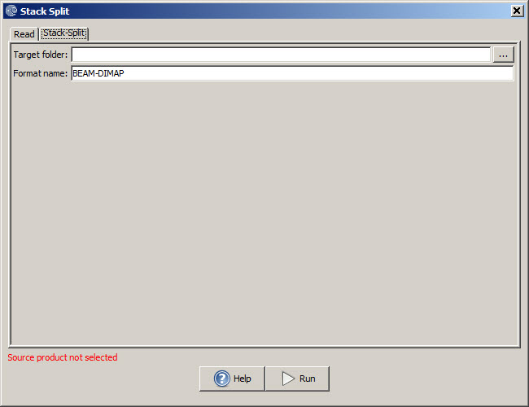

Stack Split Operator
Stack Split operator does the opposite of
what the Create Stack operator does. It separates a given stack product
into each individual reference and secondary products.
Input and Output
- The
input to this operator is a stack product.
- The output of this operator are individual reference and secondary products.
Parameters Used
The following processing parameter is required for this operator (see Figure
1):
- Target Folder: The destination folder in which the split reference and secondary products are saved.
- Format name: The output product format.

Figure 1. Stack Split operator
UI
Processing parameters (reference)
GPT operator: Stack-Split. Generated from the operator source; parameter names are those used in GPT and graph XML.
| Parameter | Type | Default | Allowed values | Unit | Description |
|---|
targetFolder | File | target | | | The output folder to which the data product is written. |
formatName | String | BEAM-DIMAP | | | The name of the output file format. |
Background
Prerequisites
- Recommended: a coregistered stack (the operator splits it into reference and secondary products; there is no explicit check)
Next step
- Process each split product separately, or export it